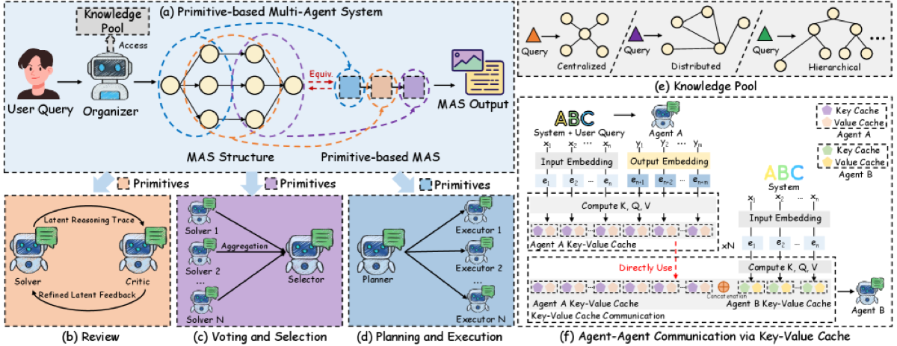

Why it matters왜 중요한가
MAS design has no "standard library" — every team is rebuilt from scratch, and the wires between agents are brittle natural-language strings.
MAS 설계에는 "표준 라이브러리"가 없다 — 매번 팀을 처음부터 다시 짜고, 에이전트 사이의 배선은 깨지기 쉬운 자연어 문자열이다.
Frameworks like MetaGPT or ChatDev hard-code roles and protocols, so complexity scales with every new task instead of being amortized. Worse, agents talk in text: in stress tests, natural-language coordination dropped to 15.6% instruction compliance under long-context injection, and accuracy fell from 100% to 40% with 25 injected noise sentences. The authors reframe MAS the way deep learning reframed networks — as a composition of a few reusable blocks — and replace the text wires with direct KV-cache hand-off, which held 73.3% compliance / 77% accuracy under the same stress.
MetaGPT·ChatDev 같은 프레임워크는 역할과 프로토콜을 하드코딩해, 새 과제마다 복잡도가 누적될 뿐 분산되지 않는다. 게다가 에이전트는 텍스트로 대화한다: 스트레스 테스트에서 자연어 협응은 long-context 주입 시 지시 준수율 15.6%로 떨어지고, 잡음 문장 25개를 넣자 정확도가 100%→40%로 붕괴했다. 저자들은 딥러닝이 신경망을 재정의했듯 MAS를 몇 개의 재사용 블록의 조합으로 재정의하고, 텍스트 배선을 직접 KV-cache 전달로 대체한다 — 같은 스트레스에서 준수율 73.3% / 정확도 77% 유지.

By the numbers핵심 숫자
vs. single-agent baseline평균 정확도 상승
단일 에이전트 대비
vs. text-based MAS토큰 절감
텍스트 MAS 대비
primitives재사용 잠재
프리미티브 개수
strongest single primitive최강 단일 프리미티브 대비
조합 추가 이득
single-agent (text MAS: 4–6×)단일 대비 지연 오버헤드
(텍스트 MAS: 4~6×)
backbones evaluated벤치마크 · 평가한
LLM 백본 수
Results — vs. existing MAS on Llama-3-70B결과 — Llama-3-70B에서 기존 MAS와 비교
| Metric / Benchmark | Prior MAS기존 MAS | Primitives프리미티브 | Δ |
|---|---|---|---|
| GPQA (Llama-3-70B) | 33.6–40.2 | 53.2 | +13.0~19.6 |
| Qwen3-8B avg accQwen3-8B 평균 | 58.8 | 75.3 | +16.5 |
| NL coord. compliance자연어 협응 준수율 | 15.6 | 73.3 | +57.7 |
| Acc. under 25 noise sents잡음 25문장 정확도 | 40 | 77 | +37 |
In one diagram한 장의 그림
The core idea: blocks + latent wires핵심 아이디어: 블록 + 잠재 배선
Three Agent Primitives
Review = latent self-critique loop (Solver↔Critic). Voting & Selection = a consensus operator over parallel latent candidates (many Solvers + Selector). Planning & Execution = a latent decomposition operator (Planner→Executor). Each exposes the same external interface as a normal LLM agent, so they snap together.
Review = 잠재 자기비판 루프(Solver↔Critic). Voting & Selection = 병렬 잠재 후보에 대한 합의 연산자(다수 Solver + Selector). Planning & Execution = 잠재 분해 연산자(Planner→Executor). 각 블록은 일반 LLM 에이전트와 동일한 외부 인터페이스를 노출해 서로 끼워 맞춰진다.
KV-cache hand-off + KV PoPE
Agent A's final KV-cache is concatenated onto agent B's system KV-cache; B decodes conditioned on it, with no text decoded in between. The trick is KV PoPE: re-index A's KV by B's system-prompt length so RoPE positions stay valid. Ablating this re-indexing is catastrophic — HumanEval+ on LLaMA crashes from 85.3% to 31.1%.
에이전트 A의 최종 KV-cache를 B의 시스템 KV-cache에 이어 붙이면, B는 중간에 텍스트를 디코딩하지 않고 그 위에서 추론한다. 핵심은 KV PoPE: A의 KV를 B의 시스템 프롬프트 길이만큼 재색인해 RoPE 위치를 유지한다. 이 재색인을 제거하면 치명적 — LLaMA의 HumanEval+가 85.3%→31.1%로 붕괴.
How it works어떻게 작동하나
- Organizer reads the queryOrganizer가 질의를 읽는다An LLM (GPT-5.2 / Claude-4 in experiments) maps the query to a primitive-composition plan, guided by a lightweight Knowledge Pool of previously effective MAS structures.LLM(실험에서는 GPT-5.2 / Claude-4)이 질의를 프리미티브 조합 계획으로 매핑하며, 과거에 효과적이었던 MAS 구조의 경량 Knowledge Pool이 이를 안내한다.
- Instantiate primitives프리미티브 인스턴스화Selected blocks (Review / Voting / Planning) are placed in order; each runs its internal Solver/Critic/Selector/Planner/Executor agents.선택된 블록(Review / Voting / Planning)을 순서대로 배치하고, 각 블록이 내부 Solver/Critic/Selector/Planner/Executor 에이전트를 실행한다.
- Communicate via KV-cacheKV-cache로 통신Within and across blocks, an agent's KV-cache is concatenated onto the next agent's, re-indexed by KV PoPE so RoPE positions stay valid — no text round-trip.블록 내부·간에서 에이전트의 KV-cache를 다음 에이전트에 이어붙이고 KV PoPE로 재색인해 RoPE 위치를 유지 — 텍스트 왕복 없음.
- Emit a single answer단일 해답 출력The final block decodes one answer through a standard LLM interface, so the whole system is a drop-in replacement for a text MAS — but cheaper and steadier.마지막 블록이 표준 LLM 인터페이스로 단일 해답을 디코딩하므로, 전체 시스템이 텍스트 MAS의 대체재가 된다 — 더 싸고 더 안정적으로.
What to take away그래서, 가져갈 것
An "assembly language" for agents. Three reusable latent blocks replace bespoke agent teams, amortizing design cost across tasks instead of paying it each time.
에이전트를 위한 "어셈블리 언어". 세 개의 재사용 잠재 블록이 맞춤형 에이전트 팀을 대체해, 설계 비용을 매번 치르지 않고 과제 전반에 분산한다.
Latent wires beat text wires. KV-cache hand-off keeps coordination robust under noise/long context where natural language degrades — and cuts tokens 3–4×.
잠재 배선 > 텍스트 배선. KV-cache 전달은 자연어가 열화되는 잡음·long context에서도 협응을 견고하게 유지하며 토큰을 3~4배 줄인다.
RoPE re-indexing is load-bearing. KV PoPE isn't a detail — removing it collapses LLaMA accuracy by ~54 points, the difference between working and not.
RoPE 재색인이 핵심 기둥. KV PoPE는 사소한 디테일이 아니다 — 제거 시 LLaMA 정확도가 약 54점 붕괴, 작동 여부를 가른다.
Auto-composition works. An LLM Organizer + Knowledge Pool beats random structure selection by 5–12.4%, so MAS design can be automated, not hand-tuned.
자동 조립이 통한다. LLM Organizer + Knowledge Pool은 무작위 구조 선택보다 5~12.4% 높아, MAS 설계를 수작업 대신 자동화할 수 있다.